Johnnies Creek
The cable
in the last rapid is gone as of 12/2000.
| 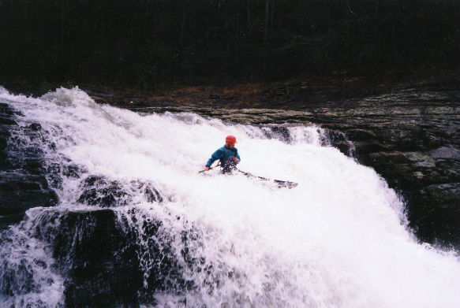 | The opening drop on Johnnies. It gets much harder after this. |
| 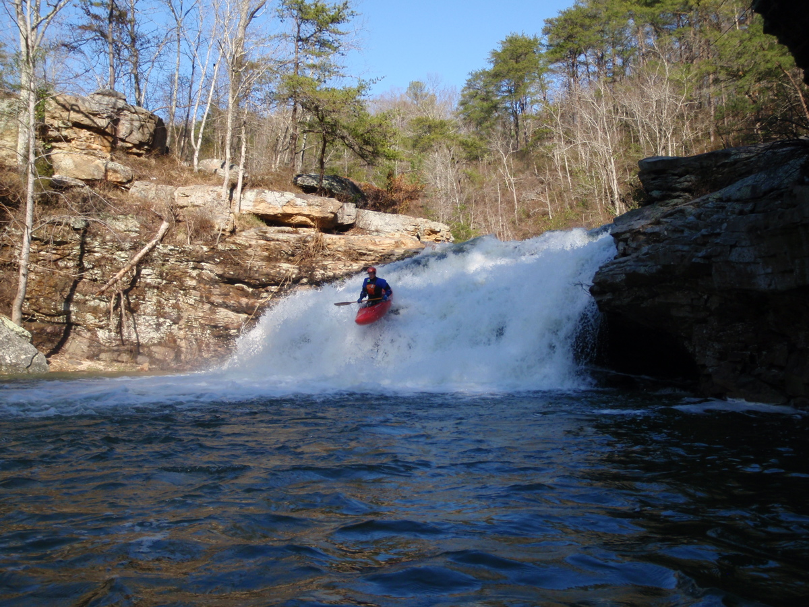 | Another view of the put-in waterfall at -4".
The only challenge is to not tweak your back. (photo courtesy Brian McAnnally) |
| 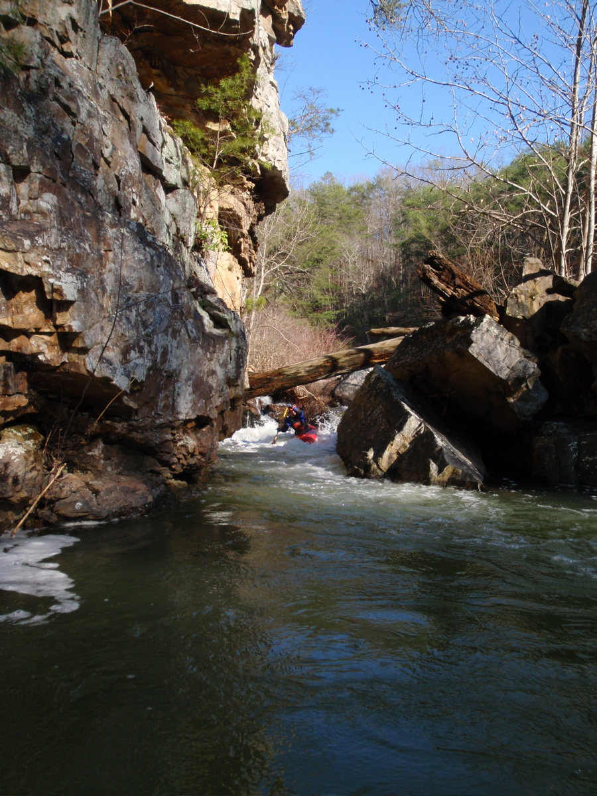 | The right side of 2 out of 3 at -4". This
is just below the opening waterfall. The log comes into play above 0". The left side of 2 out of 3 is quite
runnable, but at some levels I have seen 2 out of 3 people pin there (me included). Short boats help. (photo courtesy Brian McAnnally) |
| 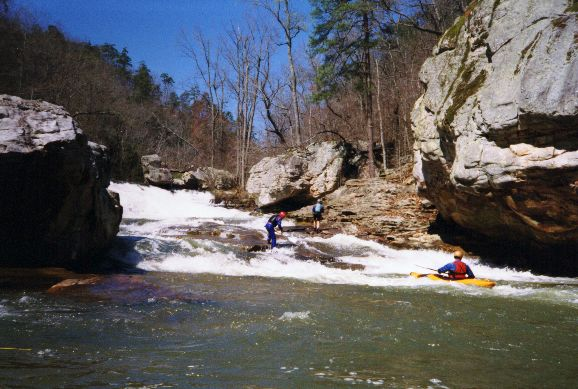 | The bottom of the big slide just above Gorilla Contrictor. Branham and boat have parted ways. |
| 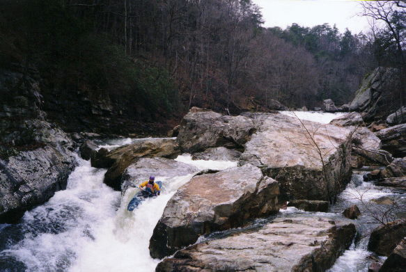 | Greg Hunt on the tricky opening drop to Gorilla Constrictor |
| 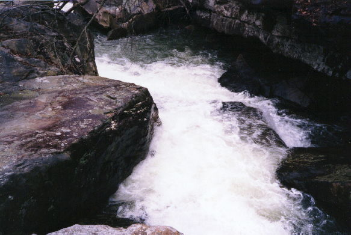 | A view from above of the last two drops or so of Gorilla Constrictor |
| 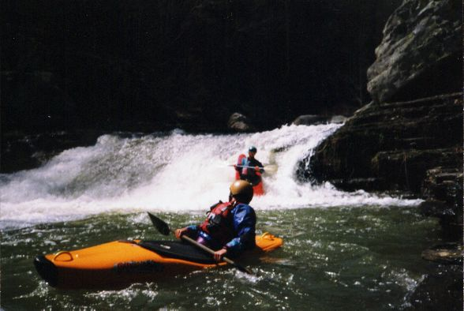 | John Parker, at the 10' slide. It can be sticky. The less popular left line. |
| 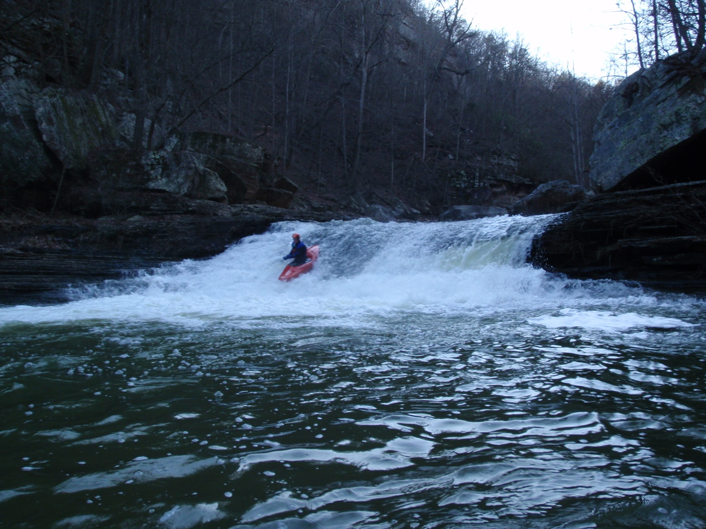 | Me running the easier right side of the 10' slide. (photo courtesy Brian McAnnally) |
| 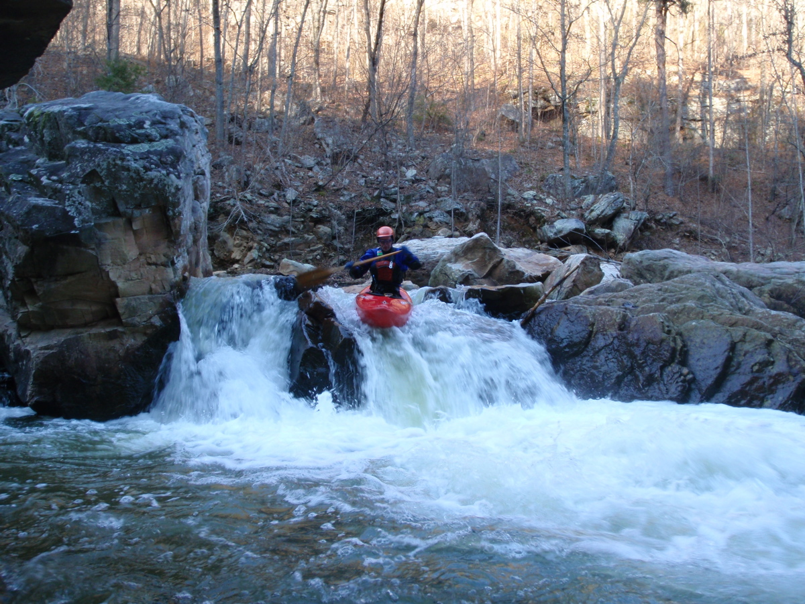 | The first drop at Cliff Right, which might be called
Bitch, -4" (photo courtesy Brian McAnnally) |
| 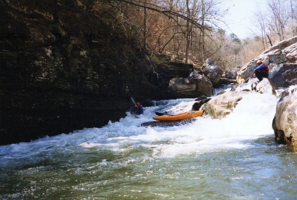 | Dave Branham doing the offside salute at Cliff Right. |
| 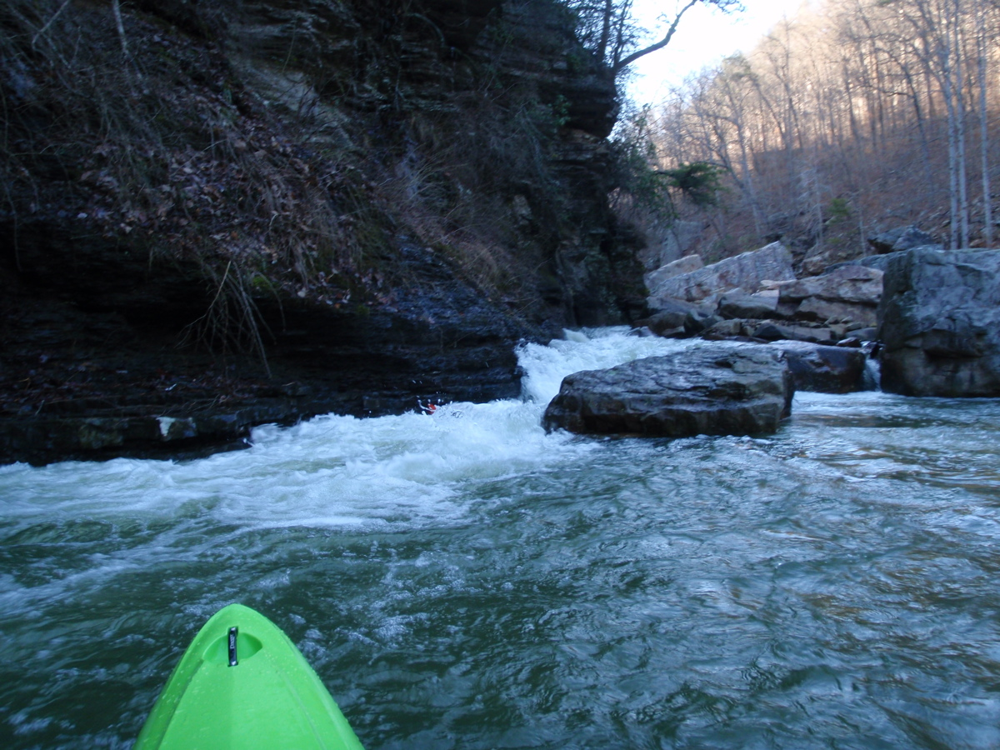 | This might be called Meltdown, but I call it Earthquake.
It changed a bunch around 2003. You want to run it left of center or way left depending on level. At -2" and
up, you sort of head down the left edge of the current and go over the angled drop (obscured in this photo). Below
that, it may be best to just catch the left eddy and wheelchair out of it. The eddy above the last drop can be
a pain to get out of. Right is bad, it's a pinch. You'll note that a yak is pinned on river right. This photo is
at -4". It is right after Cliff Right, which is right after the 10' slide. (photo courtesy Brian McAnnally) |
| 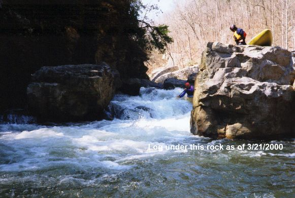 | Meltdown in its pre-2003 state. It looks like the rock on river right is now the piton rock at the bottom that also forms the right side slot. In this configuration, it used to smack you into the river left rock face. I think the rock moved from this position around the time of the spring 2003 earthquake . This rapid may have been different the first time I ran Johnnies in 2007. My memory is faint, but I think it was a boof down the middle in 1997. The river right rock may not have been there, perhaps it fell in between 1997 and 2000 or so. |
| 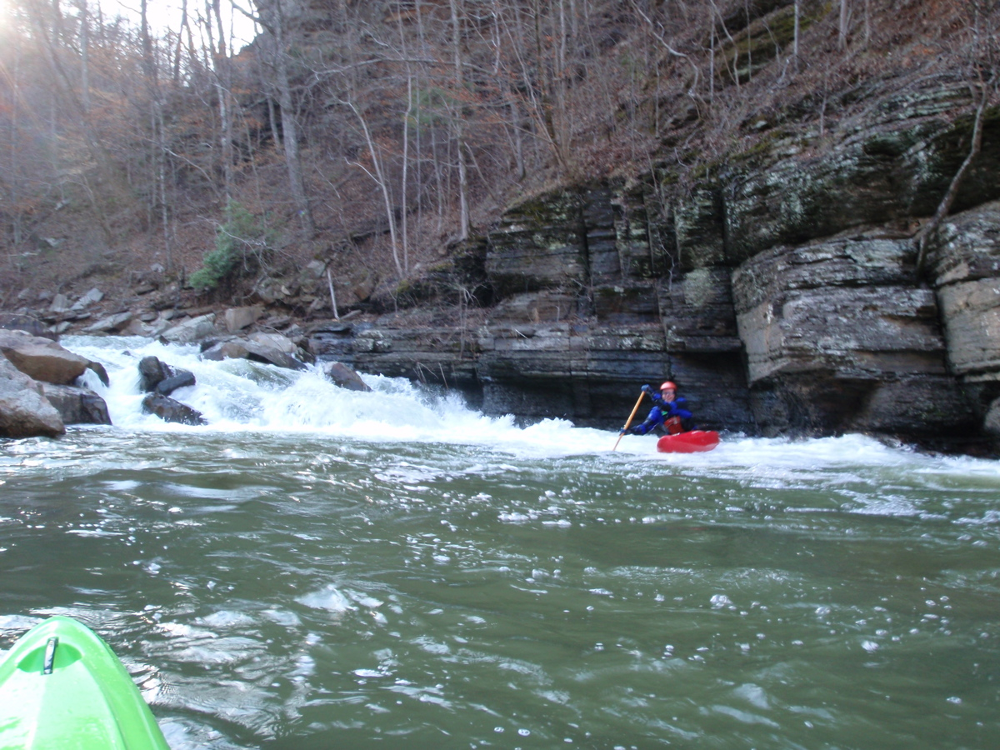 | This one want to puch you into the cliff on river
left. I'm laughing because I just went left of the last rock on tleft, which I'd never done before, and it was
smooth as silk. (photo courtesy Brian McAnnally |
| 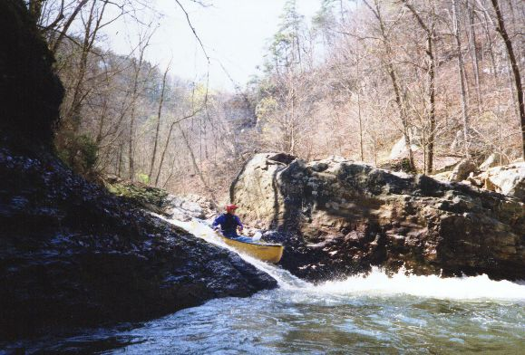 | All my pictures are of Dave! This might be called Bastard, or seven foot, anyhow a boof right is a nice plan. |
| 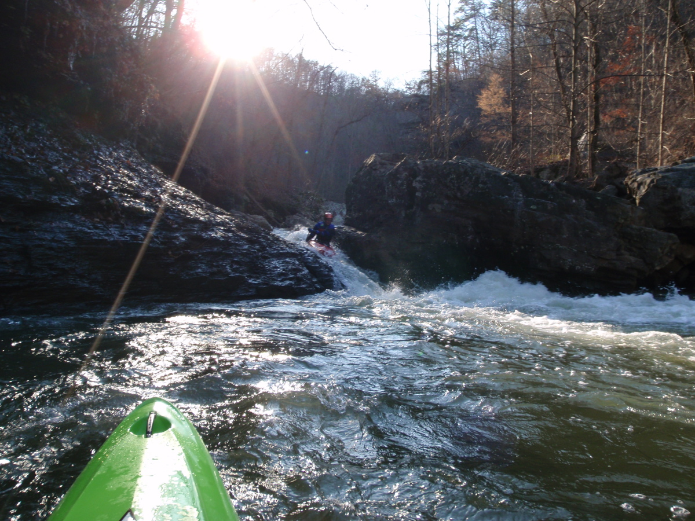 | Me on a late afternoon March run, -4" (photo courtesy Brian McAnnally) |